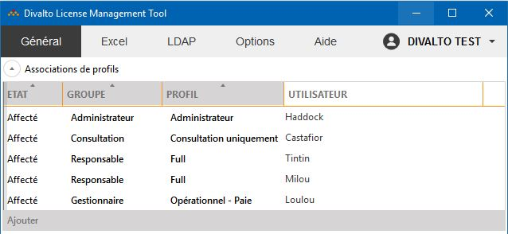

Accueil | DLMT - Gestion des licences nommées | Divalto Licences Management Tool (DLMT) | Association des utilisateurs aux profils
Association des utilisateurs aux profils
DLMT permet d’associer les profils
de licence à des utilisateurs nommés. Les comptes Windows des utilisateurs
utilisant l’ERP doivent être associés aux différents profils de l’installation.
A chaque profil correspond un compte.
Pour créer une nouvelle association, cliquez sur le bouton Ajouter
(raccourci clavier Insert, sous réserve que le tableau ait le focus) et
saisissez les éléments suivants :
- Groupe (*).
Sélectionnez un groupe parmi l'ensemble des groupes de profils proposés.
Remarque : Au fur et à mesure de l'association des groupes aux utilisateurs,
seuls les groupes encore disponibles sont proposés dans la liste.
- Profil.
Sélectionnez un profil parmi l'ensemble des profils du groupe.
Remarque : Si le groupe ne contient qu'un unique profil, cette zone
est automatiquement garnie.
- Utilisateur.
Saisissez le compte de l'utilisateur qui bénéficiera des fonctionnalités
liées à ce profil.
(*) La notion de groupes de profils est expliquée en détails dans
le tarif Infinity.
La saisie de l'utilisateur peut s’effectuer de manière manuelle, assistée
ou automatique :
- Manuellement, il convient tout simplement de saisir le compte de
l’utilisateur dans le tableau.
- La saisie assistée nécessite un annuaire LDAP (par exemple, l’Active
Directory). Dans les options, il faut indiquer les paramètres de connexion
au serveur LDAP (voir le paragraphe « Option
: Annuaire LDAP »). Dans ce cas, au fur et à mesure de la saisie
des comptes d’utilisateur, DLMT propose les utilisateurs correspondant
à la saisie.
- L’association automatique peut s’effectuer soit à partir d’un fichier
Excel, soit à partir de l’annuaire LDAP.
